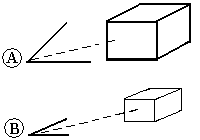

Perspective views
Creating perspective drawing views
There are two methods for defining a perspective view to place on a drawing.
-
In the model document, you can first add perspective to a window, and then use the View Orientation command to save a new named view with perspective.
Perspective views created in this manner can be selected from the Primary Views list in the Drawing View Creation Wizard (Drawing View Layout) dialog box.
-
In a draft document, you can create a perspective drawing view using the Custom Orientation dialog box of the Drawing View Creation Wizard.
This method creates an ad hoc perspective view to place on the drawing without opening the model document.
What is perspective?
When perspective is applied to a model view, objects that are farther away appear smaller. This is achieved through perspective angle, which makes perspective views more realistic than isometric views. In isometric views, objects in the model appear uniformly sized no matter how far they are from the viewer.
As the perspective angle increases, the distance to the object decreases, making the object appear closer. The angle in the first picture (A) is wider than the angle in the second (B), so that the first picture appears closer.

There are some limitations to perspective views. You cannot:
-
Create a perspective view from a camera point that is inside the model.
-
Add dimensions to a perspective view.
-
Generate hidden edges.
-
Create additional views from a source perspective view.
Defining perspective distance and angle
Perspective is defined by the combination of the perspective angle, zoom distance, and pan. These values define the camera through which the model is viewed.
You can change all of these values in the Custom Orientation dialog box in Draft.
-
To change the perspective angle, use the Perspective option. You can choose a predefined angle from the Perspective Angle list, or you can define a custom perspective angle using Shift+Ctrl while rotating the mouse wheel.
-
To change the zoom distance, use the Zoom Area or Zoom options.
-
To focus on one area of the model, use the Pan option to center that part of the model within the window.
The Perspective command in the model document quickly adds perspective to, or removes perspective from, the model as it is currently displayed. However, you cannot change the perspective angle with this command.